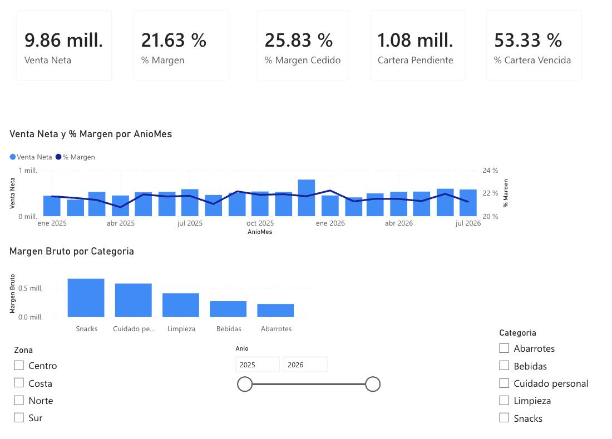
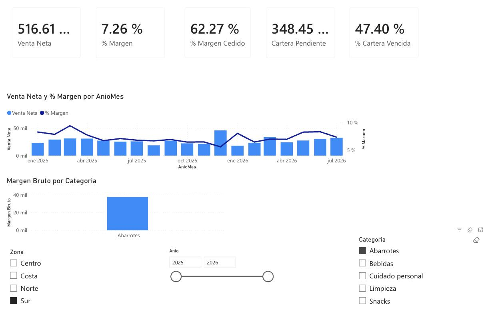
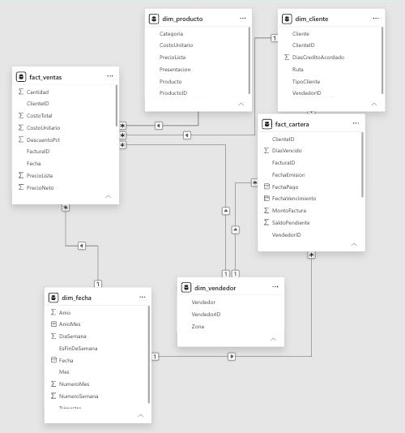

Tablero ejecutivo para un distribuidor mayorista, construido de principio a fin en Power BI. Está diseñado para responder una pregunta: ¿dónde se está yendo el margen?
Prueba los filtros de zona, categoría y año. Si el informe no carga, las capturas de abajo muestran las mismas vistas.
Lo que reveló
Una cuarta parte del margen posible se entrega en descuentos. El costo no baja cuando el vendedor descuenta, así que cada dólar de descuento sale íntegro del margen: se cede el 25,8 % del margen que se habría obtenido a precio de lista.
Vender más no mejora el margen. Entre enero y julio, la venta de 2026 supera a la de 2025 en 5,1 %, pero el margen se queda en 21,6 % y la parte cedida en descuentos sube de 25,8 % a 26,2 %.
Zona Sur + Abarrotes es el caso más grave: 7,26 % de margen y 62,3 % del margen potencial cedido. Se regaló más margen (≈ 61,9 mil) del que se retuvo (≈ 37,5 mil).
Más de la mitad de la cartera está vencida (53,3 %).
Capturas

Vista general: venta, margen, descuento y cartera en una sola pantalla.

Filtro Zona Sur + Abarrotes: 7,26 % de margen, con el 62,3 % del margen potencial cedido en descuentos.
Modelo de datos

Modelo estrella: 6 tablas, 7 relaciones de varios a uno en una sola dirección.
Tabla
Contenido
Filas
fact_ventas
Líneas de venta
25.680
fact_cartera
Facturas por cobrar
6.528
dim_fecha
Ene 2025 – jul 2026
577
dim_producto
5 categorías
96
dim_cliente
Rutas y crédito
140
dim_vendedor
4 zonas
8
La categoría filtra las ventas pero no la cartera, porque una factura mezcla productos de varias categorías.